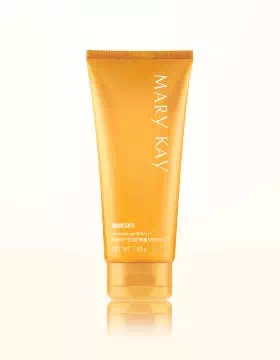
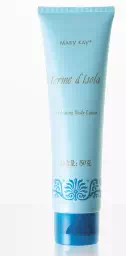
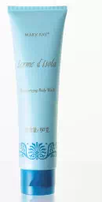

天气越来越热，是不是只想赖在清凉的海水里逃避高温？但想在海边任性撒欢，单单依靠防晒的“高倍数”可不够！
想要毫无负担地享受清凉？ 千万别忘了“护肤二重奏”！隔离了毒辣的紫外线，你的防晒能牢牢贴合肌肤，隔离掉海水里的脏东西吗？要知道，海水里过高的盐度和无法避免的污染物，会给皮肤造成不容小觑的伤害！
清爽防水的玫琳凯骄阳®防晒霜 SPF30/PA+++就是你要找的TA！肆意享受清凉的同时，轻松做到防水防晒，不用担心肌肤会被紫外线和脏东西“趁虚而入”。
担心“漏网之鱼”？出水洗护看这里！出水之后，彻底的清洁和护理当然也不能偷懒。为了不让身体“变干变涩”，一定要立刻沐浴并擦干，并涂上保湿、滋养的护肤品。记得要把每个角落都照顾到哦。
 充满“度假感”的洗护套装——玫琳凯®异域风情滋养沐浴乳+玫琳凯®异域风情保湿润肤乳，温和地清洁皮肤污垢后，辅助肌肤从长时间的紧绷状态中，恢复柔软细腻。
❶ 虽然海边是臭美觅桃花的好地方，但为了皮肤的健康着想，还是不要带妆下水哦！
❷ 不管是在岸边还是水里，1-2小时一定要补涂防晒霜。
❸ “躲”在室内泳池，防晒也不能松懈，灯光和池水都是你要“防范”的对象！
泡在冰凉海水中的肌肤，
是最放松也是最危险的。
想要做美丽的“出水芙蓉”，
就千万别忽视游泳前后的皮肤防护！